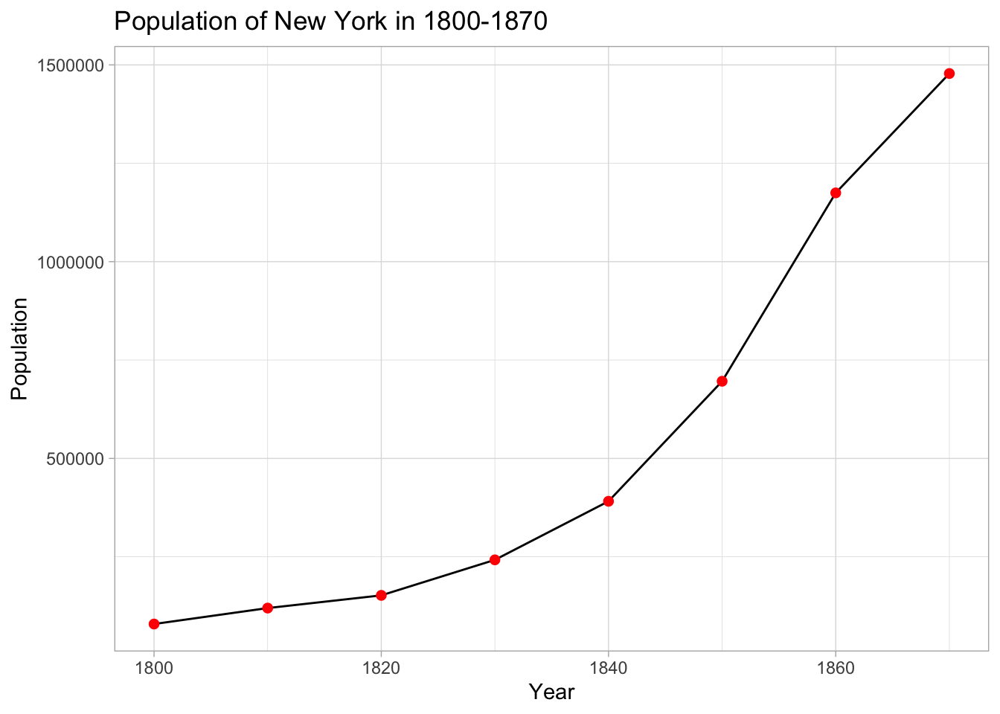

Chapter 2 What is R for historians?
In this part I shall briefly explain some fundamentals of visualization in R with a focus of how R instruments can be used for historical research. R is a great language for data visualization. Since it was created as a statistical language, R has well developed, clear and simple set of instruments for graphic visualization. Here I shall show some examples of very basic instruments of visulaization in R, their advantages and limitations, and how they can be used in historical visualization. In this part I aim to give some general overview of the question that will be considered in details in further chapters. Historians deal with a specific kind of data. Often, the exact information is missed. For instance, we have only a period of time, but not an exact date for many events. In addition, we have entities that correspond several categories, for example, for the A event there were several groups of participants. Finally, the event A happened in a place, which location is unclear or does not exist anymore. All these challenges can be solved in R libraries. However, it needs some creative approach and coding above standard R libraries.
2.1 What are the aims of data visualization?
There are several aims of the data visualization. Firstly, a graphic presentation of the data aims to show readers and researchers a clear image of the data, which was obtained within the research. Historians (alike social scientists) deal with the abstract information, not physical. For instance, we need to operate with some demographical statistics for a certain period in history, presented as a table with years and population numbers. Let’s have a look at the statistics for New York population in 1800-1870
This little table looks good and clear enough, however, more likely social historians will have thousands of entities, categorizes in various group. For a cognitive perspective, a graphic image is more clear and preferable for demonstration of the abstract information, because it allow to imagine the abstract data in physical categories, such as length, size, etc.

On this graphic image the crucial dynamics of population growing is visible in a crearer way. This example is typical for statistical data, however, statistics is not the only kind of data, which can be visualized for giving an optimal way of demonstration. Geographical data is even brighter example, because the visualizations converts abstract longitudes and latitudes into a point on the map. For example, let’s imagine some data of geography of Spain:
These elementary examples show some basic instruments of visualization in the case if we have exact information about an event, phenomena or unit. Missed information or dubious information, while different sources provide different evidences is one of the challenges of the historical data that we will examine in next parts.
Secondly, the aim of visualization is providing a material for data analysis. A graphic image, especially in the case of thousands of entities provides opportunities to see a context and behaviour of particular entity in a comparative perspective, showing tendencies and dependencies of the whole data.
2.2 What kind of historical data can be potentially visualized in R?
Historians operate with tons of various information and its context. The context accordingly can include a local level and cover a specific geographical territory, legal and cultural space, or a particular period of time. However, the data can be also considered in a global comparative context, which includes relationships with other spaces and periods.
Historical data often does not provide accurate numbers. Moreover, historians often deal with not only numerical data. For instance, if we need to visualize connections between actors or a genealogy of the concept. Statistics and geography is not only the data, which can be visualized using R instruments.